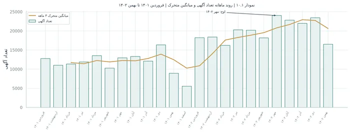
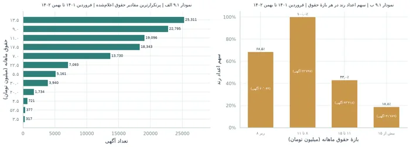
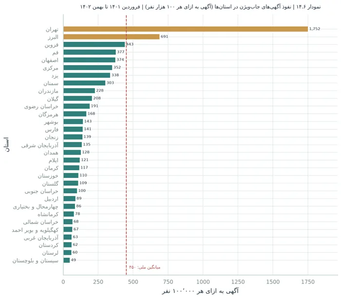
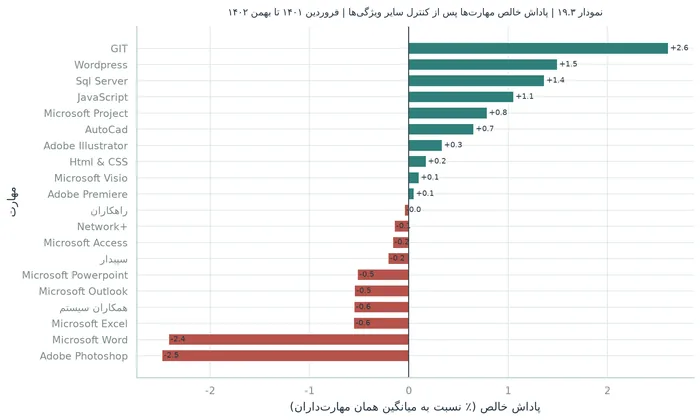

صفحه اصلی · راهنما · ماشینحساب حقوق
داشبورد پروژه
چکیدهٔ یکصفحهای پروژه: هشت عدد کلیدی، شش نمودار محوری و مسیر رفتن به تحلیل کامل هر بخش.
۳۶۰٬۰۸۳آگهی در ۲۳ ماه
۳۳٫۱٪نرخ افشای حقوق
۱۱ میلیونمیانه حقوق ماهانه (IQR ۹–۱۷٫۵)
۴۰مقدار یکتای حقوق (باندبندی بازار)
۶۴٫۶٪سهم تهران از آگهیها
۱٬۷۵۲نفوذ تهران در هر ۱۰۰ هزار نفر (ملی: ۴۵۰)
۵۳٫۸٪آگهیهای دارای فهرست مهارت
۱٬۸۵۲تمرکز بازار (HHI از ۱۰٬۰۰۰)




